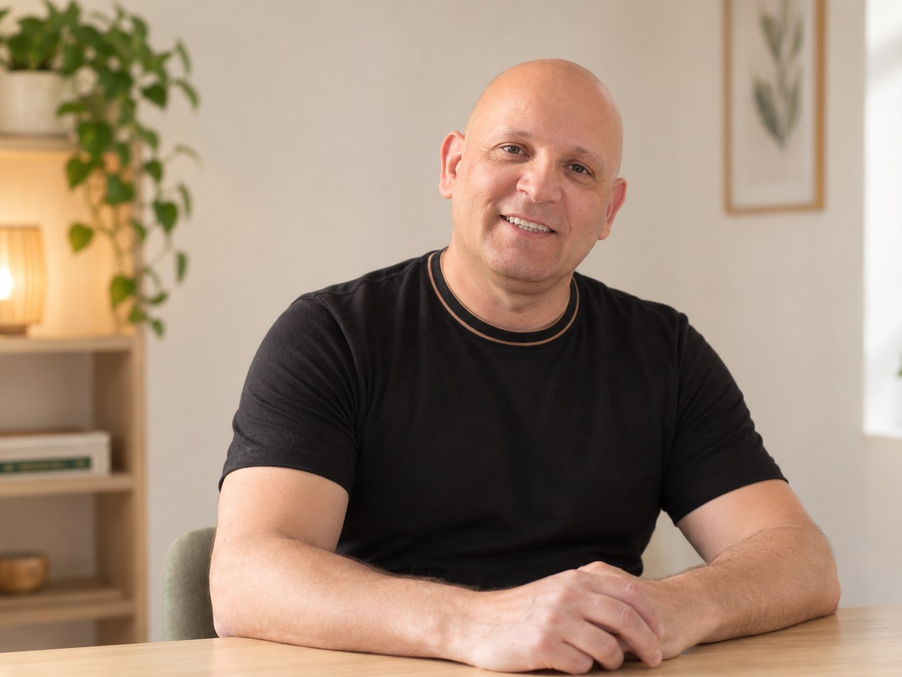
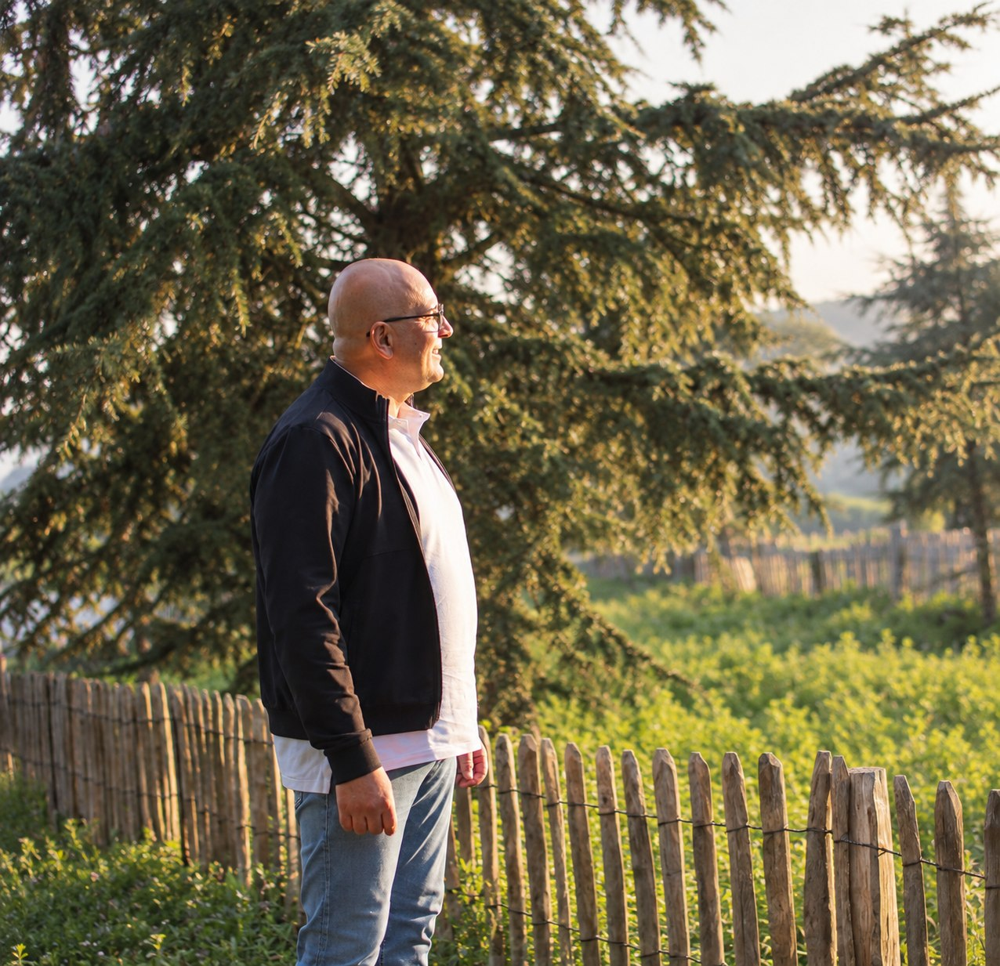
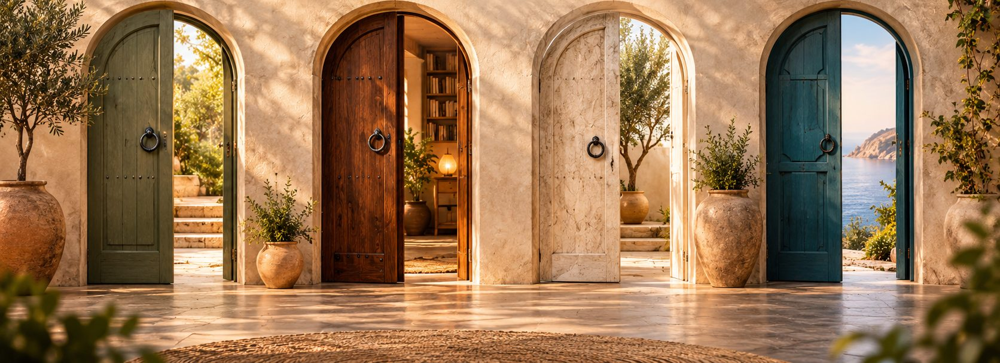
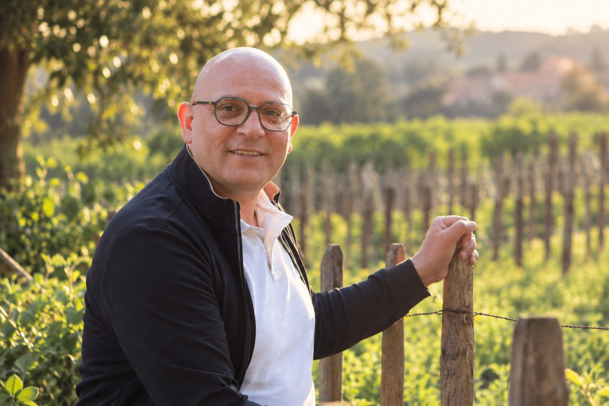
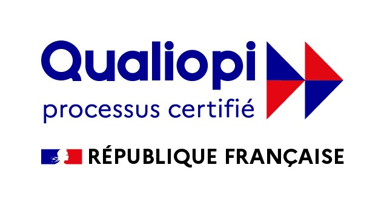
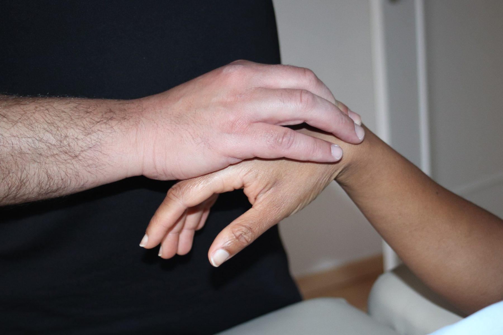
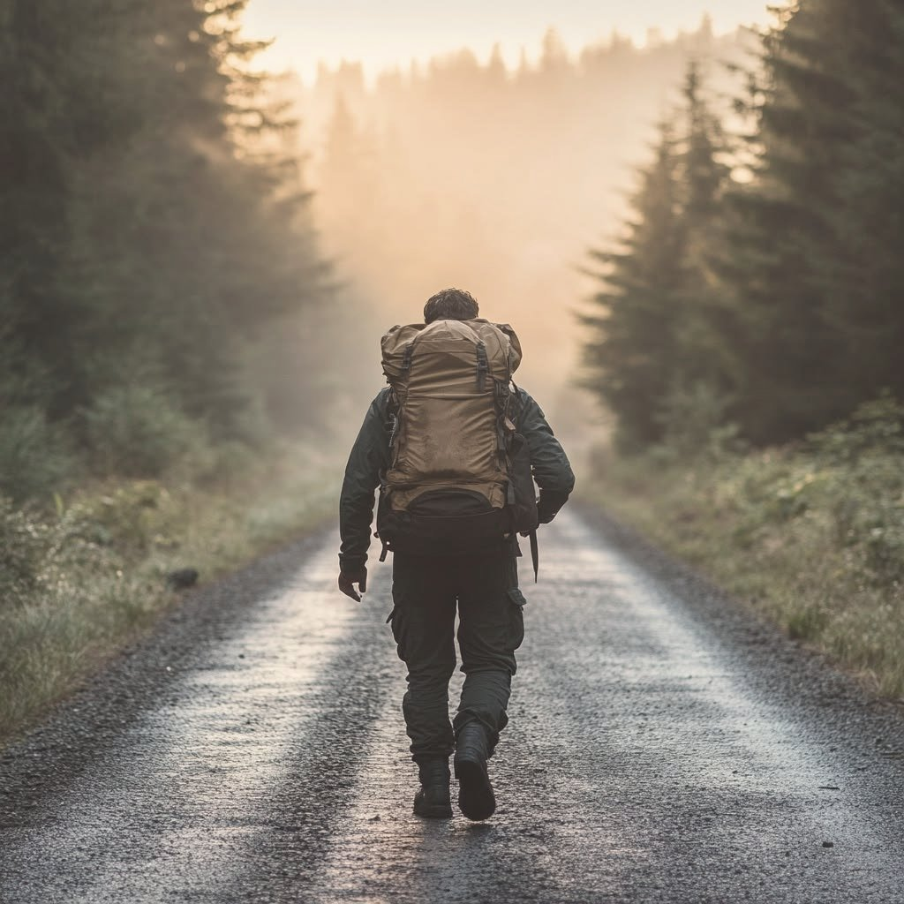
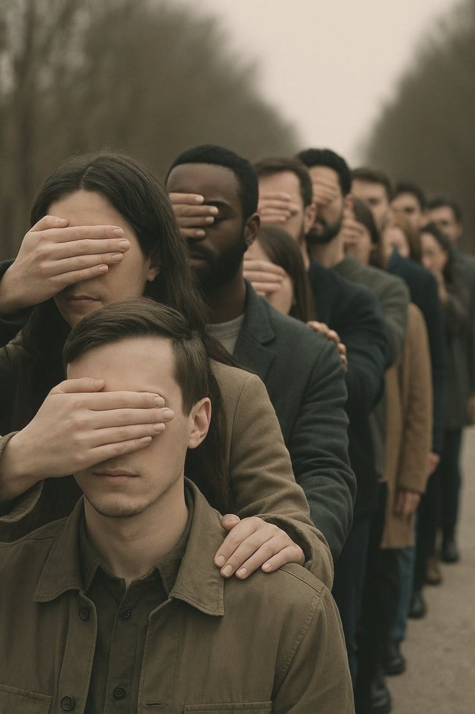
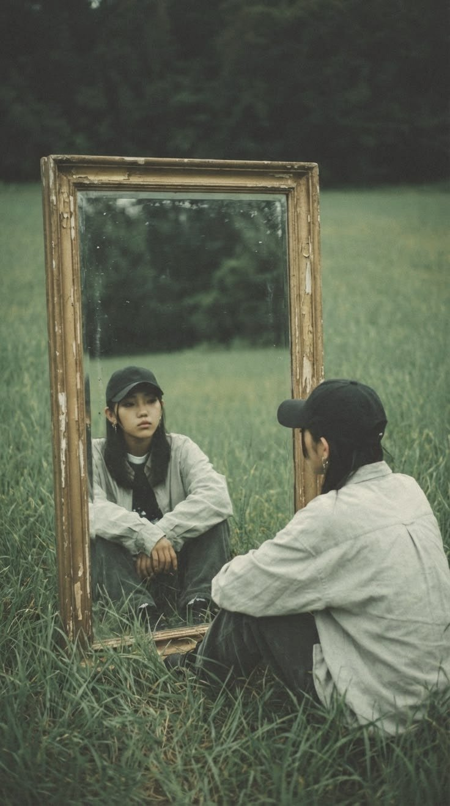
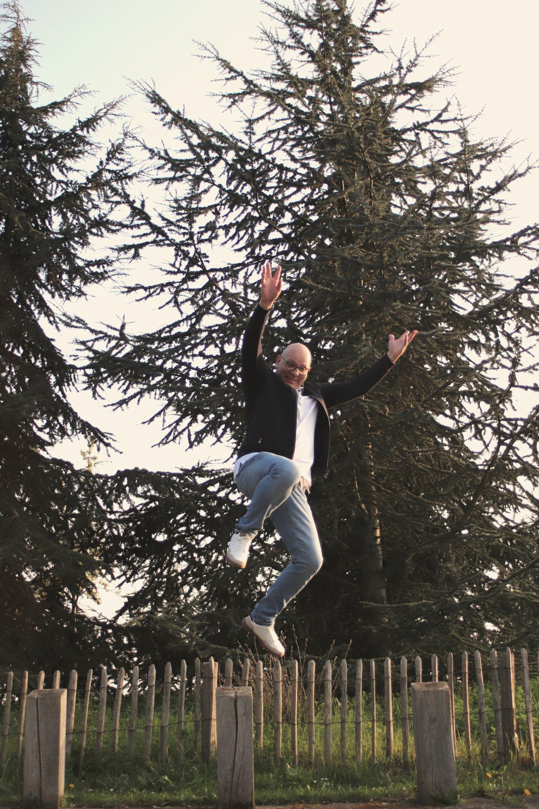

Derrière nos façons d'être, il y a une histoire à écouter.
Je suis Abdelhakim Taleb, kinésiologue, préparateur mental et formateur.
Avant d'accompagner les personnes individuellement, j'ai passé plus de vingt ans dans l'entrepreneuriat. J'y ai rencontré des façons de penser différentes, des tensions, des décisions difficiles et des situations où plusieurs regards étaient nécessaires pour trouver une issue.
Mon parcours m'a amené à m'intéresser à ce qui se joue derrière nos comportements : nos réactions, nos habitudes, nos façons de nous protéger et de nous adapter.
Je me suis formé à la kinésiologie, à la préparation mentale et à plusieurs approches issues de la psychologie appliquée.
Aujourd'hui, ce qui m'anime, c'est d'offrir un espace où chacun peut prendre du recul, mettre des mots sur ce qu'il traverse et explorer sa situation sous un nouvel angle.
Je m'appuie sur mon expérience, mes formations et différents outils, en accordant une place essentielle à la personne, à son histoire et à ce qu'elle souhaite explorer.
Je vous accompagne avec sérieux, curiosité et respect, dans une démarche qui se construit ensemble et reste fidèle à votre réalité.

Le corps ressent. La pensée cherche à comprendre.
Nous cherchons souvent à comprendre ce que nous vivons. Nous analysons, nous mettons des mots, nous essayons de donner du sens.
Mais notre expérience ne se résume pas à ce que nous pouvons expliquer. Elle passe aussi par les sensations, les émotions, les tensions et les réactions qui nous traversent.
Le corps participe à cette expérience. La pensée nous aide à l'observer, à la comprendre et à lui donner du sens.
Dans mon accompagnement, je m'intéresse à cette rencontre entre ce que nous ressentons, ce que nous pensons et la manière dont nous vivons les situations.
Chaque personne, son histoire. Chaque accompagnement, sa voie.
Mon expérience, mes formations et les différents outils que j'utilise nourrissent ma manière d'accompagner : kinésiologie, préparation mentale et approches issues de la psychologie appliquée.
Je prends le temps de découvrir votre histoire, d’écouter ce que votre corps exprime et de laisser émerger, au fil de nos rencontres, ce qui demande à être entendu.

Les outils sont des points d'appui. C'est votre réalité qui guide l'accompagnement.

Nos façons d'être ont une histoire.
Nos habitudes, nos expériences et nos émotions participent à la manière dont nous percevons les situations et y répondons.
Certaines façons de fonctionner nous ont aidés à traverser des périodes de notre vie. Elles ont parfois constitué des repères, des protections ou des moyens de nous adapter.
Plutôt que de lutter contre soi-même ou de vouloir supprimer toutes ses fragilités, on peut chercher à mieux les comprendre, reconnaître ses ressources et expérimenter d'autres façons d'avancer.
Évoluer, c'est parfois simplement se retrouver, autrement.
Un accompagnement adapté à votre réalité
Faites glisser pour découvrir
Retrouver ses propres repères
Stress, émotions, confiance en soi, relations, transitions de vie ou questionnements personnels.
Un espace pour explorer ce que vous vivez, prendre du recul et faire émerger des pistes qui vous correspondent.
Être présent quand l'enjeu compte
Pression de la compétition, concentration, confiance, gestion des émotions et préparation d'une échéance importante.
Un travail sur les ressources mentales pour aborder les défis avec davantage de disponibilité, de stabilité et de confiance.
Dépasser les tensions, renouer le dialogue
Communication, relations humaines, gestion des conflits, posture professionnelle et cohésion d'équipe.
Des interventions et des formations adaptées aux réalités du terrain, aux enjeux des équipes et aux situations rencontrées. Présentiel, distanciel ou format mixte. 

La kinésiologie, c'est quoi ?
Une approche qui associe la parole et le corps. On part de ce que vous vivez, et le test musculaire sert de support pour explorer ce qui se joue derrière une réaction ou un blocage.
En savoir plus sur la kinésiologieLe carnet des passages
Il y a des choses que l'on comprend avec la tête, d'autres que l'on découvre avec le temps, et certaines que l'on ne parvient à regarder qu'à partir du moment où l'on se sent suffisamment en sécurité. Ouvrir le carnet
Faites glisser pour découvrir

Le sac
Certaines habitudes nous accompagnent si longtemps que nous ne remarquons plus leur poids.
Lire l'article
Le masque
Ce que l'on montre aux autres, et ce que l'on cache parfois à soi-même.
Lire l'article
Le miroir
L'image que nous avons de nous-mêmes est-elle toujours fidèle à ce que nous sommes aujourd'hui ?
Lire l'article
Le lâcher-prise
Avant de vouloir abandonner une habitude, peut-être faut-il comprendre ce qu'elle nous permet de préserver.
Lire l'article« Moi qui suis de nature très stressée, j'ai enfin trouvé un véritable apaisement et une meilleure compréhension de moi-même. Je le recommande à 100 % ! »
« Après une seule séance, il est redevenu l'enfant plein d'innocence qu'il a toujours été. Un grand merci pour son approche douce et efficace. »
« Son approche est douce et efficace, il est patient, à l'écoute et ultra bienveillant. Je recommande vivement ! »
« Excellent kinésiologue qui m'a permis de régler mes problèmes de vie dans une période de souffrance. Merci beaucoup Abdelhakim ! »
Et si nous commencions par là où vous en êtes ?
Vous n'avez pas besoin d'avoir toutes les réponses avant de venir. Nous pouvons commencer par votre situation actuelle, ce qui vous questionne et ce que vous aimeriez voir évoluer.
Un premier échange pour clarifier votre demande et voir si mon accompagnement correspond à vos besoins.
Accompagnement individuel
Kinésiologie et accompagnement personnalisé, au cabinet à Sannois. Adultes et enfants.
Réserver une séancePréparation mentale
Compétition, échéance importante ou situation à enjeu. Au cabinet ou à distance selon l'objectif.
Réserver une séanceInterventions et formations
Pour les équipes, les managers et les organisations. Format et durée définis avec vous. Organisme de formation certifié Qualiopi.
Échanger sur votre projetLes tarifs dépendent du type d'accompagnement. Ils vous sont indiqués lors de la réservation ou dans le devis.
Une question avant de réserver ? Me contacter
Abdelhakim Taleb
Kinésiologue, préparateur mental et formateur
La kinésiologie et la préparation mentale ne se substituent pas aux soins médicaux.
Mentions légalesConfidentialité
Site conçu par Azel Studio